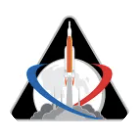
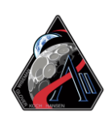

NASA successfully completed an uncrewed test flight of the SLS (Space Launch System) rocket and Orion spacecraft in Nov. 2022. This mission marked the first launch of the rocket using new exploration ground systems and evaluated Orion’s systems without astronauts or the critical life support systems planned for future crewed missions.

In April 2026, Artemis II launched on a nearly 10-day voyage around the Moon, marking the first crewed flight of NASA’s Orion spacecraft. NASA astronauts Reid Wiseman, Victor Glover, and Christina Koch, along with CSA (Canadian Space Agency) astronaut Jeremy Hansen, traveled 252,756 miles from Earth, setting a record for the greatest distance humans have traveled in space and observing the lunar surface like never before.
Demonstration mission in low Earth orbit, planned for 2027, to evaluate one or both commercial human landing systems developed by SpaceX and Blue Origin. The mission will launch a crew aboard Orion on the SLS (Space Launch System) rocket and will test the critical rendezvous and docking operations between Orion and the commercial lander systems needed for future lunar surface missions.
NASA continues to target the first Artemis lunar landing for 2028, a date that has remained consistent since mid‑2025. After launch, the crew will transfer from Orion to a commercial human landing system that will transport them to the lunar surface. Beginning with Artemis IV, NASA is standardizing the configuration of the SLS (Space Launch System) rocket.
Using the standardized configuration of the SLS (Space Launch System) rocket, NASA anticipates launching this lunar surface mission in 2028 and sustaining a cadence of one mission per year thereafter.